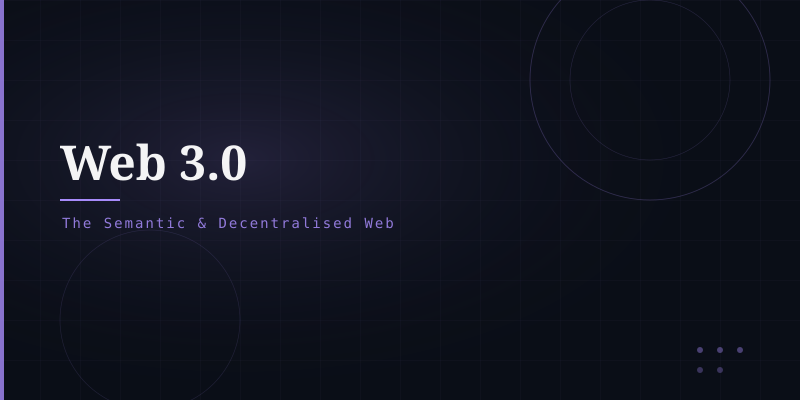

What is Web 3.0?
Web 3.0 is broadly used in two overlapping senses:
1. The Semantic Web (Tim Berners-Lee's vision): web content annotated with machine-readable metadata so AI and software agents can understand and reason about information automatically.
2. The Decentralised Web (blockchain-based): a Web where data and services are owned and controlled by users rather than centralised corporations, using blockchain, cryptocurrencies, NFTs, and smart contracts.
Key Technologies
Distributed ledger ensuring trustless, tamper-proof data storage (Bitcoin, Ethereum).
Self-executing code on the blockchain eliminating intermediaries.
RDF, OWL, SPARQL — machine-readable data formats.
Decentralised finance and digital ownership tokens.
Goals of Web 3.0
User sovereignty over personal data · Censorship resistance · Trustless transactions without intermediaries · Interoperability between platforms · Transparent, auditable logic via smart contracts.
Criticism & Reality
Web 3.0 remains controversial. Critics argue blockchain-based systems are slow, energy-intensive, and often replicate existing power structures. The practical realisation of a truly decentralised web faces significant technical, regulatory, and usability challenges.